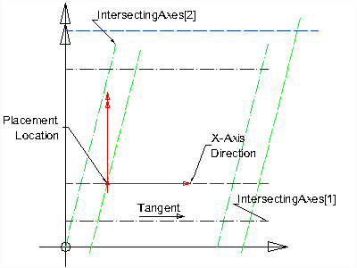
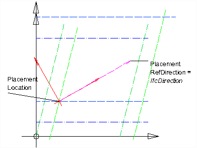
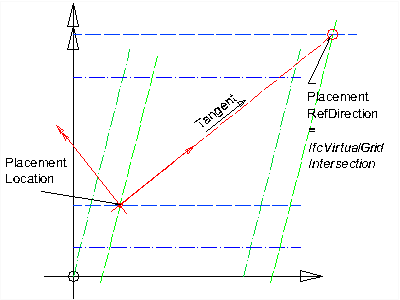

EXPRESS-G diagram
EXPRESS-G diagram| Positionnement de grille | |
| Rasterplatzierung |
IfcGridPlacement provides a specialization of IfcObjectPlacement in which the placement and axis direction of the object coordinate system is defined by a reference to the design grid as defined in IfcGrid.
The location of the object coordinate system is given by the attribute PlacementLocation. It is defined as an IfcVirtualGridIntersection, that is, an intersection between two grid axes with optional offsets.
The axis direction of the x-axis of the object coordinate system is given either:
The direction of the y-axis of the IfcGridPlacement is the orthogonal complement to the x-axis. The plane defined by the x and y axis shall be co-planar to the xy plane of the local placement of the IfcGrid.
The direction of the z-axis is the orientation of the cross product of the x-axis and the y-axis, i.e. the z-axis of the IfcGridPlacement shall be co-linear to the z-axis of the local placement of the IfcGrid.
NOTE The IfcGrid local placement, that can be provided relative to the local placement of another spatial structure element, has to be taken into account for calculating the absolute placement of the virtual grid intersection.
NOTE The PlacementLocation.OffsetDistances[3] and the PlacementRefDirection.OffsetDistances[3] shall either not be assigned or should have the same z offset value.
The following figures show the usage of placement location and direction for an IfcGridPlacement.
 |
Figure 275 illustrates the case where PlacementRefDirection is not given - the object coordinate system is defined by:
|
Figure 275 — Grid placement |
 |
Figure 276 illustrates the case where PlacementRefDirection is given as an IfcDirection- the object coordinate system is defined by:
|
Figure 276 — Grid placement with direction |
 |
Figure 277 illustrates the case where PlacementRefDirection is given as an IfcVirtualGridIntersection- the object coordinate system is defined by:
|
Figure 277 — Grid placement with intersection |
HISTORY New entity in IFC1.5. The entity name was changed from IfcConstrainedPlacement in IFC2x.
IFC4 CHANGE Attribute data type of PlacementRefDirection has been changed to IfcGridPlacementDirectionSelect.
XSD Specification:
<xs:element name="IfcGridPlacement" type="ifc:IfcGridPlacement" substitutionGroup="ifc:IfcObjectPlacement" nillable="true"/>EXPRESS Specification:
| ENTITY IfcGridPlacement |
| SUBTYPE OF IfcObjectPlacement; |
|
| END_ENTITY; |
Attribute Definitions:
| PlacementLocation | : | Placement of the object coordinate system defined by the intersection of two grid axes. |
| PlacementRefDirection | : |
Reference to either an explicit direction, or a second grid axis intersection, which defines the orientation of the grid placement.
IFC4 CHANGE The select of an explict direction has been added. |
Inheritance Graph:
| ENTITY IfcGridPlacement |
| ENTITY IfcObjectPlacement |
| INVERSE |
|
| ENTITY IfcGridPlacement |
|
| END_ENTITY; |
 Link to this page
Link to this page